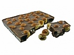

Chocolate Cake

- al dente
- A correct degree of doneness for pasta and vegetables
- baste
- Brush oil around item to be cooked to prevent dryness
- pinenut
- Also called pignoli
- Ingredients:
-
- 100g flour
- 10g sugar
- 1 cup water
- 2 eggs
- salt, pepper
- Procedure:
-
- Mix dry ingredients thoroughly
- Pour in wet ingredients
- Mix for 10 minutes
- Bake for one hour at 300 degrees
all done
Written by Chris Gerbino
cgerbino@scu.edu